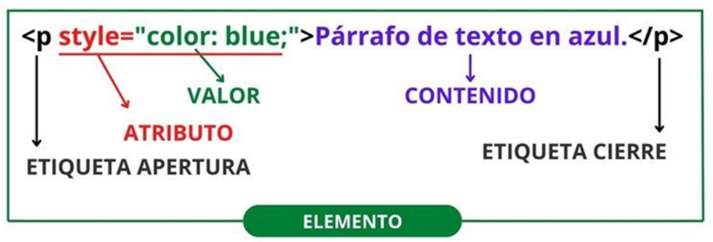
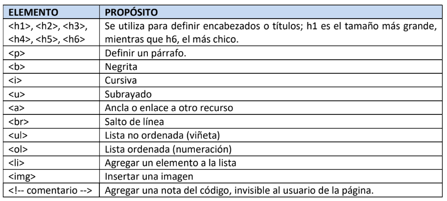

Elementos HTML
Son todas aquellas herramientas o instrucciones que podes usar en el basto mundo del lenguaje de marcado HTML, y que nos permite estructurar el contenido de una página web para su posterior visualización en motores de búsqueda como Google.

Estructura de un elemento:
- Etiqueta de Apertura: Es el nombre del elemento encerrado entre los símbolos < >. Ejemplo: <p>, <h1>...
- Atributo: proporciona información adicional sobre el elemento y se incluyen dentro de la etiqueta de apertura.
- Valor del atributo: se asigna mediante el signo igual (=) y se encierra entre comillas (simples o dobles). Ejemplo: <a href=”https://www.ejemplo.com”>
- Contenido: Es la información que se encuentra entre la etiqueta de apertura y la etiqueta de cierre del elemento. Ejemplo: <p>Este es el contenido del párrafo.</p>
- Etiqueta de Cierre: Es similar a la etiqueta de apertura, pero incluye una barra diagonal (/) antes del nombre del elemento. Ejemplo: </p>, </h1>. Algunas etiquetas no tienen contenido, y se cierran sobre sí mismas, por lo que no tienen etiqueta de cierre, se llaman etiquetas vacías. Ejemplo; <br>, <img>...
Los elementos HTML sirven para:
- Definir la estructura de la página: Se utilizan para crear encabezados, párrafos, listas, tablas, formularios, etc.
- Mostrar contenido: Se utilizan para mostrar texto, imágenes, vídeos, audio, etc.
- Agregar interactividad: Se utilizan para crear enlaces, botones, formularios, etc.
- Mejorar la accesibilidad: Se utilizan para proporcionar información semántica sobre el contenido de la página a los lectores de pantalla y otros dispositivos de asistencia.
Son como las piezas de un rompecabezas que se ensamblan para crear la estructura HTML y el contenido de la página. Cada elemento tiene un propósito específico y se define mediante una etiqueta de apertura y una etiqueta de cierre.
En HTML, los elementos son las unidades fundamentales de construcción de una página web. Existen varios tipos de elementos, cada uno con un propósito específico. A continuación, algunas categorías principales:

Ejercicios:
- Crear una lista de titulos utilizando los distintos tamaños de encabezado.
- Escribir un párrafo corto y resaltar palabras en negrita, cursiva y subrayado.
- Escribir una receta utilizando una Lista no ordenada para los ingredientes y una Lista ordenada para el procedimiento. Finalmente, agregar una imagen relacionada con la receta.